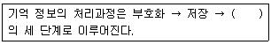
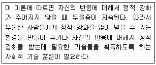
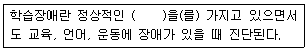
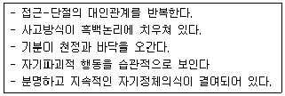
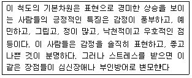
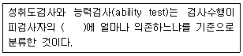
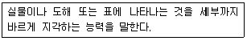
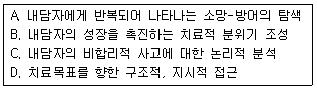
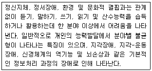
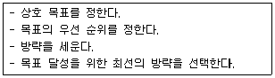

임상심리사-2급 (2004-08-08 기출문제)
1과목: 심리학개론
1. 심리학의 연구방법 중 비교집단이 절대적으로 필요한 연구방법은?
- 조사법
- 실험법
- 자연관찰법
- 사례연구법
(정답률: 86%)

2. 콜버그에 의하면 다음의 도덕 발달 단계 중 가장 낮은 수준은 어느 것인가?
- 개인적 권리와 사회적 계약
- 보상과 처벌
- 개인적 양심
- 사회적 승인과 불승인
(정답률: 81%)
3. 기억에 관한 처리 깊이 이론에서 처리의 깊이가 증가하는 순서대로 바르게 나열한 것은?
- 의미적, 물리적, 청각적
- 청각적, 의미적, 물리적
- 물리적, 청각적, 의미적
- 의미적, 청각적, 물리적
(정답률: 74%)
4. 아동기의 애착에 관한 설명 중 옳은 것은?
- 유아가 엄마에게 분명한 애착을 보이는 시기는 생후 3~4개월경부터이다.
- 엄마와의 밀접한 신체접촉이 애착을 형성하는데 가장 중요한 역할을 한다.
- 애착은 인간 고유의 현상으로서 동물들에게는 유사한 현상을 찾아보기 어렵다.
- 안정적으로 애착된 아동들은 엄마가 없는 낯선 상황에서도 주위를 적극적으로 탐색한다.
(정답률: 81%)
5. 프로이트(Freud)가 제시한 성격의 세구조가 발달하는 순서로 올바른 것은?
- 초자아 - 원초아 - 자아
- 자아 - 원초아 - 초자아
- 원초아 - 자아 - 초자아
- 자아 - 초자아 - 원초아
(정답률: 96%)
6. Maslow의 5단계 욕구 중 "금강산도 식후경"이라는 속담의 의미와 일치하는 욕구는?
- 생리적 욕구
- 안전의 욕구
- 소속 및 애정의 욕구
- 자기실현의 욕구
(정답률: 95%)
7. 자신과 타인의 휴대폰 소리를 구별하거나 식용버섯과 독버섯을 구별하는 것과 관련된 현상은?
- 변별
- 일반화
- 행동조형
- 2차 조건형성
(정답률: 93%)
8. 다음 ( )에 알맞은 것은?

- 인출
- 정교화
- 망각
- 파지
(정답률: 90%)
9. 고전적 조건형성과 관계가 없는 것은?
- Pavlov의 개의 소화과정 연구와 밀접한 관련이 있다.
- 고차적 조건형성도 가능하다.
- 자극일반화와 변별이 가능하다.
- 미신적 행동과 학습된 무력감을 설명할 수 있다.
(정답률: 60%)
10. 다음 중 Rogers의 "자기" 개념의 설명으로 잘못된 것은?
- 사람의 세상에 대한 지각에 영향을 준다.
- 상징화되지 못한 감정들로 구성되어 있다.
- 자기에는 지각된 자기 외에 되고 싶어하는 자기도 포함된다.
- 지각된 경험에 의해 형성된다.
(정답률: 82%)
11. 다음 중 처벌의 효과를 극대화하는 방안으로 부적절한 것은?
- 반응과 처벌간의 지연간격이 짧아아 한다.
- 처벌과 강화는 상호의존적이어야 한다.
- 처벌은 약한 강도에서 시작하여 그 행동이 반복할수록 점차적으로 강해져야 한다.
- 처벌은 확실한 규칙에 근거해서 주어야 한다.
(정답률: 76%)
12. 개인이 태도를 형성하는 과정을 일관성 원리로 설명하고자 하는 이론 중에서 최소노력의 원리를 이용하여 변화의 방향성을 예언하는 이론은?
- 균형이론
- 기대-가치이론
- 인지부조화이론
- 유인가이론
(정답률: 34%)
13. Freud의 방어기제 중 성적인 충동이나 공격성을 사회적으로 수용되며 바람직한 방향으로 변화시켜 표현하는 기제는?
- 합리화
- 주지화
- 승화
- 전위
(정답률: 86%)
14. Erikson의 심리사회적 단계에서 초기 성인기에 겪는 위기는?
- 신뢰감 대 불신감
- 정체감 대 혼미감
- 친밀감 대 고립감
- 생산성 대 침체감
(정답률: 56%)
15. Kelley의 귀인이론에서 사람들이 행동의 원인을 밝혀내기 위해 의존하는 정보가 아닌 것은?
- 독특성
- 일관성
- 상보성
- 일치성
(정답률: 70%)
16. 조련사가 돌고래를 훈련시키는 과정을 설명할 수 있는 조건형성 현상은?
- 자극일반화
- 소거
- 변별조건형성
- 조형
(정답률: 86%)
17. 의미있는 "0"의 값을 갖는 측정 척도의 명칭은?
- 명명척도(nominal scale)
- 비율척도(ratio scale)
- 등간척도(interval scale)
- 서열척도(ordinal scale)
(정답률: 67%)
18. Hovland와 Janis의 설득 커뮤니케이션 모형에서 말하는 설득효과에 영향을 미치는 요인에 대한 설명으로 맞는 것은?
- 표적인물의 지능이 높을수록 설득효과는 커진다.
- 설득 내용이 표적인물의 태도와 불일치(discrepancy)가 너무 작으면 대비효과가 나타난다.
- 표적인물이 설득내용에 대한 접촉경험이 많으면 설득 효과는 크다.
- 표적인물의 주의를 분산시키면 설득효과가 크다.
(정답률: 38%)
19. "잘되면 제 탓 못되면 조상 탓" 이라는 우리 나라 속담과 유사한 맥락으로 이해될 수 있는 귀인의 오류는?
- 자아 고양 편파(self-serving bias)
- 행위자-관찰자 편향(actor-observer bias)
- 통제력 있다는 착각(illusion of control)
- 상황적 무시 편향
(정답률: 76%)
20. 아동기에서 성인기로 옮겨가는 청소년기는 사춘기로 시작된다. 이 때 나타나는 발달 특성이 아닌 것은?
- 각 신체변화의 비율이 완만한 성장을 보인다.
- 동성 및 이성의 친구를 선택한다.
- 성인이 되는 과정으로 많은 심리 사회적 압력이 작용한다.
- 2차적인 성 특징들이 발달된다.
(정답률: 77%)
2과목: 이상심리학
21. 다음은 우울증을 설명하는 한 이론이다. 무슨 이론인가?

- Rehm의 자기 통제 이론
- Lewinsohn의 행동 이론
- Beck의 인지 이론
- Seligman의 개정된 학습된 무기력 이론
(정답률: 53%)
22. 알코올 금단증상이 아닌 것은?
- 자율신경계 기능 항진
- 손떨림 증가
- 불면증
- 혼미 또는 혼수
(정답률: 37%)
23. 치매에 대한 설명으로 틀린 것은?
- 노인성 치매는 초발 연령 65세 이상에서 발생할 때를 일컫는 말이다.
- 치매는 사회적, 직업적 기능을 방해할 정도로 인지 기능이 점차 퇴화된다.
- 우울과 구분을 하기 위해서 치매 증상이 아침에 더욱 심하게 나타나야 한다.
- 작화증(confabulation)은 특정한 기억이 상실되었을 때 부정확하게 과거의 자신의 활동으로 내용을 채워 넣는 대표적인 증상이다.
(정답률: 81%)
24. 정신분열증의 하위유형에 대한 설명으로 적절하지 않은 것은?
- 혼란형(disorganized) 정신분열증 환자는 신조어(neologism)를 만들거나 바보 같은 표정으로 웃음을 터뜨린다.
- 망상형(paranoid) 정신분열증 환자는 흥분되어 있으며 분노에 차있고 간혹 폭력적이 된다.
- 혼란형 정신분열증 환자는 극단적인 형태의 운동정지로 운동이 수동적이 되며 반복적인 언행을 보이기도 한다.
- 망상형 정신분열증 환자는 자신의 능력을 과대평가하기도 하고 남을 의심하고 모든 일에 자신을 연관시켜 생각하기도 한다.
(정답률: 43%)
25. 이미 존재하지 않는 신체 부분에 대한 환각으로 사지를 절단한 후에 흔히 나타나는 것은?
- 반사환각
- 팬텀(Phantom)현상
- 운동환각
- 신체환각
(정답률: 62%)
26. 다음 중 섬망(delirium)의 증상이 아닌 것은?
- 환경에 어떤 일이 일어나는지에 대한 자각감소
- 기억손실, 지남력 상실
- 증상은 오랜 시간에 걸쳐서 진행
- 조리에 맞지 않는 언어
(정답률: 67%)
27. 망상장애의 하위유형의 내용이 맞는 것은?
- 과대형 - 유명인, 전문인이 자신과 사랑에 빠졌다.
- 피해형 - 자신이 모함 받고 있거나 감시당하고 있다.
- 색정형 - 신으로부터 계시를 받았다.
- 신체형 - 배우자나 연인이 부정하다.
(정답률: 61%)
28. 다음 ( )에 들어갈 가장 정확한 용어는?

- 사회환경적 변인
- 심리구조
- 지능
- 발달력
(정답률: 72%)
29. 다음 중 정신분열병의 음성 증상에 속하는 것은?
- 무감동
- 망상
- 환각
- 의존성
(정답률: 75%)
30. 다음은 어떤 유형의 성격장애의 특성을 나타낸 것인가?

- 반사회적 성격장애
- 경계선 성격장애
- 자기애성 성격장애
- 연극성 성격장애
(정답률: 57%)
31. 김씨는 길을 걸을 때 보도 블럭의 금을 절대 밟지 않으며 만약 밟게 되면 무슨 큰일이 일어날 것처럼 불안해진다. 김씨의 행동과 관련지어 생각해 볼 수 있는 질환은?
- 범 불안장애(Generalized Anxiety disorder)
- 공황장애(Panic disorder)
- 강박장애(Obsessive Compulsive disorder)
- 사회공포증(Social Phobia)
(정답률: 82%)
32. 다음 중 DSM-IV에서 분류하고 있는 이상하고 특이한 집단인 성격(인격)장애인 A군에 포함되지 않는 것은?
- 편집성 성격장애
- 분열성 성격장애
- 분열형 성격장애
- 회피성 성격장애
(정답률: 73%)
33. 의존성 성격장애의 특징으로 거리가 먼 것은?
- 도가 지나칠 정도로 다른 사람이 조언하고 안심시켜주지 않으면 사소한 결정도 내리지 못한다.
- 자신을 좋아한다는 확신이 없으면 어떤 사람과 인간적 관계를 맺지 않으려고 한다.
- 상대가 화를 내거나 지지를 잃게 될까봐 두려워서 다른 사람들에게 반대의견을 표현하기가 어렵다.
- 다른 사람들의 보살핌과 지지를 받기 위해 무슨 행동이든 하려고 한다.
(정답률: 86%)
34. 페닐케톤뇨증(PKU)을 가진 아동에게 추천해야 하는 사항으로 알맞은 것은?
- 전염에 대한 위험이 높기 때문에 집에서 교육하도록 한다.
- 후손도 대부분 정신지체가 될 것이라는 사실을 알려 조처를 하도록 한다.
- 특별한 식이요법을 통하여 정신지체를 예방하도록 한다.
- 리튬(lithium)의 수준을 낮추기 위해서 자주 혈액검사를 하도록 한다.
(정답률: 31%)
35. 학교에서 A군은 두통과 복통을 많이 호소하여 어머니와 함께 최근 소아과 검진을 받았는데, 별 문제가 없다는 판정을 받았다. 그러나 A군은 신체적 문제를 자주 호소하였고 집에 가야 한다고 말하면서 학교를 자주 조퇴하였다. 그 결과 학교성적은 계속 떨어졌다. 어떤 장애인가?
- 선택적 함구증
- 반응성 애착장애
- 분리불안 장애
- 상동증적 운동장애
(정답률: 78%)
36. 반항성장애(Oppositional Defiant Disorder)로 진단 받은 아동에게서 관찰할 수 있는 행동은?
- 자신도 모르게 쉴 사이 없이 눈을 깜박거리거나 일정한 몸짓을 하며 때로는 괴상한 소리를 내기도 한다.
- 엄마와 떨어지는 것에 대한 불안으로 학교 가기를 거부한다.
- 사회적으로 정해진 규칙을 위반하거나 타인의 권리를 침해한다.
- 어른들과 논쟁을 하고 쉽게 화를 낸다.
(정답률: 73%)
37. 사고의 비약(flight of ideas)이라는 증상을 바르게 설명한 것은?
- 정신분열환자의 망상적 사고
- 우울증 환자의 자살충동적 사고
- 조증환자가 대화할 때 보이는 급격한 주제의 전환
- 치매환자의 지리멸렬한 사고
(정답률: 68%)
38. 우울증 발생 원인의 생물학적 모형은?
- 도파민(Dopamine) 가설
- 공격 내재화 가설
- 카테콜라민(Catecholamine) 가설
- 인지적 왜곡
(정답률: 40%)
39. DSM-Ⅲ 이후 사용되어 온 다축진단체계에서 성격장애를 기재하는 축은?
- 축Ⅰ
- 축Ⅱ
- 축Ⅲ
- 축Ⅳ
(정답률: 35%)
40. 주의력결핍과잉행동장애(ADHD)의 특징이 아닌 것은?
- 수업수행능력의 결핍
- 또래관계 형성의 어려움
- 부끄러움
- 과잉행동성
(정답률: 94%)
3과목: 심리검사
41. 다음은 다면적 인성검사(MMPI)의 임상척도 중 어떤 척도에 대한 설명인가?

- 건강염려증 척도
- 히스테리 척도
- 강박증 척도
- 경조증 척도
(정답률: 64%)
42. 다음 중 MMPI의 9번 척도 상승과 관련된 해석으로 가능성이 가장 높은 것은?
- 과잉활동
- 사고의 혼란
- 정서적 침체
- 신체증상
(정답률: 60%)
43. 다음 중 개인의 인지능력을 측정하기 위해 사용하기에 부적절한 검사는?
- Kaufman 검사
- MMPI
- Bender-Gestalt 검사
- Wechsler 검사
(정답률: 67%)
44. 다음 중 발달적 선별검사의 설명으로 틀린 것은?
- 발달적 선별검사의 주 목적은 정상에서 이탈될 위험이 있는 아동을 확인하기 위함이다.
- 베일리(Bayley) 검사는 대표적인 발달검사이다
- 덴버발달선별검사는 자폐아동을 선별하는데 가장 많이 사용된다.
- 대부분의 발달선별검사에는 아동의 근육운동에 대한 평가가 포함되어있다.
(정답률: 60%)
45. 인간의 지능에 관한 설명 중 잘못된 것은?
- 지능검사는 결코 생득적인 선천적 능력만을 재는 것은 아니다.
- 지능에는 환경의 영향이 보다 강하다는 증거가 많다.
- 개인의 지능은 연령에 따라 상당한 항상성이 있다.
- 지적 교과나 추상적인 교과는 지능과의 상관이 높다.
(정답률: 32%)
46. 다음 ( )에 알맞은 말은 ?

- 지적능력과 기능의 수준
- 학습과 훈련의 정도
- 연령과 학력의 수준
- 지능과 학업이수 정도
(정답률: 35%)
47. 영유아 발달을 측정하는 발달검사는 다른 영역의 측정도구와 차이점이 있다. 다음 중 발달검사의 특징으로 맞는 것은?
- 아동을 직접 검사하지 않고 보호자의 보고에 의존하는 발달검사도구도 있다.
- 발달검사의 목적은 유아의 지적능력을 알아보기 위한 것이다.
- 영유아 기준 발달상 미숙한 단계이므로 다양한 영역을 측정하기 어렵다.
- 발달검사는 주로 언어이해 및 표현능력으로 구성되어 있다.
(정답률: 88%)
48. 다음 중 신경심리검사에 관한 일반적인 기술 중 옳은 것은?
- 피검자의 인구통계학적 및 심리사회적 배경에 따라 반응이 달라진다.
- 신경심리평가에서는 전통적인 지적 기능평가와 성격 평가는 필요하지 않다.
- 정상인과 노인의 기능평가에는 사용되지 않는다.
- 뇌손상은 단일한 행동지표를 나타낸다.
(정답률: 67%)
49. 성격유형검사(MBTI)의 선호지표에 대한 설명으로 적절한 것은?
- 감각형은 사람들의 모든 정보를 자신의 오관에 의존하여 받아들이는 경향이 있다.
- 판단형은 삶을 통제하고 조절하기보다는 상황에 맞추어 자율적으로 살아가기를 원한다.
- 감정형은 객관적인 기준을 바탕으로 정보를 비교 분석하고 논리적 결과를 바탕으로 판단한다.
- 직관형의 사람들은 내적 세계를 지향하므로 바깥 세계보다 자기 내부의 개념이나 생각 또는 이념에 관심을 둔다.
(정답률: 55%)
50. 투사적 성격검사와 비교하여 볼 때, 객관적 성격검사의 장점은?
- 객관성의 증대
- 반응의 다양성
- 방어의 곤란
- 무의식적 내용의 반응
(정답률: 65%)
51. 다음 중 Luria-Nebraska 신경심리 검사에 포함되지 않는 척도는?
- 운동
- 리듬
- 집중
- 촉각
(정답률: 54%)
52. 다면적 인성검사(개정판, MMPI-2)의 형태분석에서 T점수가 일정수준 이상으로 상승된 임상척도들을 하나의 프로파일로 간주하여 해석하는 것은?
- 코드유형(code type)
- 결정문항(critical items)
- 보완척도(supplementary scales)
- 내용척도(content scales)
(정답률: 70%)
53. Wechsler 지능검사를 실시할 때 주의할 점으로 올바른 것은?
- 피검자의 반응을 기록할 때는 항상 피검자가 한말을 요약하여 기록한다.
- 모호하거나 이상하게 응답되는 문항은 다시 질문하여 확인할 필요는 없다.
- 피검자가 응답을 못하거나 당황할 때는 정답을 알려줄 필요가 있다.
- 시간제한이 없는 검사에서는 피검자가 응답할 수 있을 때까지 충분한 여유를 주어야 한다.
(정답률: 35%)
54. 동일한 검사를 가지고 동일한 학생을 대상으로 시간차를 두고 두 번 시험을 실시하였는데 똑같은 결과를 나타내었다면, 평가도구의 어느 기준에 해당하는가?
- 타당도
- 신뢰도
- 객관도
- 실용도
(정답률: 70%)
55. 다음 중 표준화 검사의 특징에 들지 않는 것은?
- 검사 실시의 절차가 엄격히 통제된다.
- 모든 표준화 검사는 규준을 갖고 있다.
- 반응의 자유도를 최대한으로 넓힌다.
- 두 가지 이상의 동등형을 만들어 활용한다.
(정답률: 75%)
56. 융통식 바테리 접근(Flexible battery)으로 치매환자에게 신경심리검사를 실시하고자 할 때, 맨 처음 환자의 어떤 능력을 파악하는 것이 중요한가 ?
- 언어능력
- 인지기능
- 시· 지각 능력
- 성격
(정답률: 49%)
57. GATB 직업적성검사에서 검출되는 적성 중 다음은 어느 적성 분야에 대한 설명인가?

- 공간적성(S)
- 형태지각(P)
- 사무지각(Q)
- 수리능력(N)
(정답률: 69%)
58. 다음 중 기능이론과 학자가 올바르게 짝지워진 것은?(오류 신고가 접수된 문제입니다. 반드시 정답과 해설을 확인하시기 바랍니다.)
- Guilford는 지능을 일반적인 지적활동과 관련되는 일반요인(g-factor)과 특정활동과 관련되는 특수요인(s-factor)으로 구분하였다.
- Cattell은 지능을 선천적이며 개인의 경험과 무관한 결정성 지능과, 후천적이며 학습된 지식과 관련된 유동성 지능으로 구분하였다.
- Thurstone은 지능이 7개의 요인으로 구성되어 있다고 보는 다요인설을 주장하고, 이를 인간의 기본정신능력이라고 하였다.
- Spearman은 지능에 대한 3차원적 구조모델을 제안하였는데 내용, 조작, 결과의 모든 가능한 조합으로 지능의 요인들을 제시하고 있다.
(정답률: 55%)
59. 적성검사는 어느 영역을 측정하는 검사인가?
- 지적 영역
- 정의적 영역
- 운동성 영역
- 감각성 영역
(정답률: 46%)
60. K-WAIS검사에서 동작성 검사의 측정내용이 아닌 것은?
- 숫자 외우기
- 빠진곳 찾기
- 차례 맞추기
- 토막짜기
(정답률: 83%)
4과목: 임상심리학
61. 다음 중 규준(norm)에 대한 설명으로 올바른 것은?
- 측정한 점수의 일관성 정도를 제공해준다.
- 검사 실시와 과정이 규정된 절차에서 이탈된 정도를 제공해준다.
- 특정집단의 전형적인 또는 평균적인 수행 지표를 제공해준다.
- 연구자가 측정한 의도에 따라 측정이 되었는지의 정도를 제공해준다.
(정답률: 53%)
62. A성격유형 행동의 특징에 해당되지 않는 것은?
- 느긋함
- 성취지향
- 적개심
- 통제와 지배성
(정답률: 83%)
63. 다음 중 혐오치료를 적용하기에 가장 적합한 장애는?
- 광장공포증
- 소아기호증
- 우울증
- 공황장애
(정답률: 64%)
64. 인지치료에 대한 설명으로 틀린 것은?
- 개인의 문제가 잘못된 전제나 가정에 바탕을 둔 현실 왜곡에서 나온다고 본다.
- 개인이 지닌 왜곡된 인지는 학습상의 결함에 근거를 두고 있다.
- 부정적인 자기개념에서 비롯된 자동적 사고들은 대부분 합리적인 사고들이다.
- 치료자는 왜곡된 사고를 풀어주고 보다 현실적인 방식들을 학습하도록 도와준다.
(정답률: 67%)
65. Wolpe의 상호억제원리와 밀접히 관련된 행동치료기법은?
- 혐오치료
- 행동조성
- 긍정적 강화
- 체계적 둔감화
(정답률: 52%)
66. 임상심리학의 발전에 기여한 인물 또는 사건에 관한 연결이 올바른 것은?
- Alfred Binet - 편차형 아동지능검사 개발
- Sigmund Freud - 무의식적 갈등과 정서적 영향이 정신질환과 신체적 질병의 원인이 될 수 있다고 가정함
- Army Alpha - 문맹자와 언어장애자를 위한 비언어성 지능검사
- Wilhelm Wundt - Pennsylvania 대학교에 심리진료소 개설
(정답률: 64%)
67. 정신질환자의 사회복귀정책에 관한 설명으로 적합하지 않는 것은?
- 유럽과 미국에서 시작되었으며, 전세계적으로 확산되는 추세이다.
- 기관에 수용하는 정책보다 국가예산이 더 많이 소요 된다.
- 인본주의적 정신에 기초하여, 환자의 삶의 질을 높이는데 주력한다.
- 학적 모형에 토대한 병원 중심의 재활이 아니고, 사회심리학적 모형에 토대한 지역사회 중심의 재활이 더 중요하다.
(정답률: 75%)
68. 심리검사 결과의 시간적 안정성에 대한 지표는?
- 준거타당도
- 내용타당도
- 구성타당도
- 검사-재검사 신뢰도
(정답률: 58%)
69. 최근에 개발된 표준화 검사는 대부분 집단내 규준을 적용하여 피검사자의 점수를 상대적으로 평가한다. 다음 중 집단내 규준이 아닌 것은?
- 백분위 점수(percentile scores)
- Z 점수
- T 점수
- 정신연령
(정답률: 72%)
70. 임상심리학자의 교육수련과 관련된 설명으로 틀린 것은?
- 1949년 Boulder회의에서 과학자-전문가 수련모형이 채택되었다.
- 과학자-전문가 모형은 과학자로서의 임상심리학자나 전문가로서의 임상심리학자 중 어느 하나의 역할에 충실할 것을 강조한다.
- 심리학 박사는 과학자-전문가 모형의 한 대안이다.
- 한국심리학회에서는 자질 있는 임상심리학자를 양성하기 위하여 임상심리전문가 제도를 두고 있다.
(정답률: 79%)
71. 심리검사를 실시하거나 면접을 시행하는 동안 임상심리학자가 취해야 할 태도로 올바르지 않은 것은?
- 행동관찰에서는 다른 사람 또는 다른 장면에서는 관찰할 수 없는 비일상적 행동이나 그 환자만의 특징적인 행동을 주로 기술한다.
- 관찰된 행동을 기술할 때에는 어떤 상황에서 어떤 방식으로 불안을 나타내는지를 구체적 용어로 설명하는 것이 바람직하다.
- 정상적인 적응을 하고 있는 사람들도 심리검사와 같은 생소한 상황에 직면할 때는 여러 가지 특징적인 행동을 나타내게 되는데 이러한 일반적인 행동까지 평가보고서에 포함시키는 것이 좋다.
- 평가보고서에는 주로 환자의 특징적인 행동과 심리검사 결과뿐만 아니라 외모나 면접자에 대한 태도, 의사소통방식, 사고, 감정 및 과제에 대한 반응에서 특징적인 내용까지 포함시키는 것이 좋다.
(정답률: 50%)
72. 만성정신질환을 지니고 있는 사람들을 위한 정신사회재활 치료를 하기위해서는 질병의 성질과 결과를 이해해야 한다. 개인이 사회적 상황에서 주어진 역할이나 과제를 해내지 못하거나 수행하는데 한계를 보이는 것은?
- 병리(pathology)
- 손상(impairment)
- 장애(disability)
- 핸디캡(handicap)
(정답률: 22%)
73. Dougherty가 제시한 효과적인 자문에 필수적인 기술이 아닌 것은?
- 감정이입
- 재치
- 진솔성
- 사회적 기술
(정답률: 54%)
74. 객관적 심리검사의 결과를 표준점수로 변환시키는 이유로 알맞은 것은?
- 다른 심리검사 결과와의 차이를 직접 비교할 수 있게 해준다.
- 검사를 쉽게 실시할 수 있게 해준다.
- 심리검사 소견서를 쉽게 작성할 수 있게 해준다.
- 피검자의 심리상태를 쉽게 파악할 수 있게 해준다.
(정답률: 55%)
75. 다음 중 Boulder모델에 대한 설명으로 틀린 것은?
- 심리학박사(Psy. D) 학위를 요구한다.
- 과학자-전문가 모델이라고 불리기도 한다.
- 1년간의 전문적 임상 인턴과정을 요구한다.
- 본질적으로 Shakow 위원회에서 제안한 것과 일치한다
(정답률: 50%)
76. MMPI 임상척도의 제작방식은?
- 내적 구조 접근 및 요인분석
- 내적 내용 접근 및 연역적 접근
- 외적 준거 접근 및 경험적 준거 타당도 방식
- 직관적 방식
(정답률: 74%)
77. 내담자의 긍정적 변화를 촉진시키기 위한 치료자의 세가지 조건으로 Rogers가 제안한 것이 아닌 것은?
- 무조건적 존중
- 정확한 공감
- 창의성
- 솔직성
(정답률: 85%)
78. 임상심리사가 개인적인 심리적 문제를 갖고 있다든지, 너무 많은 부담 때문에 지쳐있다든지, 교만하여 더 이상 배우지 않고 배울 필요가 없다고 생각하거나, 해당되는 특정 전문교육수련을 받지 않고도 특정 내담자군을 잘 다룰 수 있다고 여긴다면, 이는 다음 중 어느 항목의 윤리적 원칙에 위배되는 것인가?
- 유능성
- 성실성
- 권리의 존엄성
- 사회적 책임
(정답률: 78%)
79. 다음 중 주로 인간중심의 치료과정에서 강조되는 내용으로 적합한 것은?

- A, C, D
- B
- C, D
- A, D
(정답률: 75%)
80. 주의력 결핍- 과다행동장애(ADHD)는 상황을 종합적으로 분석하고, 목표를 계획하고, 실행하는 기능에 결함을 보인다고 한다. 뇌와 행동과의 관계에서 볼 때 어떤 부위의 결함을 시사하는가?
- 전두엽의 손상
- 측두엽의 손상
- 변연계의 손상
- 해마의 손상
(정답률: 83%)
5과목: 심리상담
81. 학업상담에서 만날 수 있는 다음 사례의 적절한 명칭은?

- 학습지진
- 학습장애
- 학습부진
- 학업지체
(정답률: 48%)
82. 약물을 사용하는 자녀에 대해 바람직한 부모의 대처 방안으로 보기 어려운 것은?
- 부모는 자녀와 개방적으로 의사소통을 해야한다.
- 자녀의 말을 경청하며 자녀가 긍정적인 감정을 형성할 수 있도록 돕는다.
- 부모로서 자녀에게 적절한 훈육을 할 수 있도록 명확한 가족 정책을 세운다.
- 자녀가 확고한 가치관을 형성할 수 있도록 부모의 약점이나 결점을 숨겨야 한다.
(정답률: 80%)
83. 단기상담에 적합한 내담자의 특성은?
- 반사회적 성격장애가 있다
- 정상발달내 발달과정상의 문제가 주증상이다
- 지지적인 대화상대자가 전혀 없다
- 만성적이고 복합적인 문제가 있다
(정답률: 70%)
84. 사이버 상담의 필요성과 가장 거리가 먼 것은?
- 상담의 대중화를 위하여
- 청소년 상담에 효과가 있기 때문에
- 사회 문화적인 변화에 적응하기 위하여
- 상담자가 부족하기 때문에
(정답률: 77%)
85. 인터넷 상담에 대한 설명 중 옳지 않은 것은?
- 문자 등의 시각적 자료에 의존해야 하므로 깊이 있는 의사소통이 어려울 수 있다.
- 상담자의 입장에서 내담자의 신상과 상담 내용을 신뢰하기 어렵다.
- 인터넷상담은 일정 시간동안 대화를 주고받을 수 있는 채팅상담만을 의미한다.
- 가명을 사용한 상담사례를 소개하고 대처방안을 제시할 수 있다.
(정답률: 70%)
86. 상담 사례를 관리하는 절차에서 접수면접(intake interview)에 대한 설명 중 옳지 않은 것은?
- 접수면접은 상담신청과 정식 상담의 다리 역할을 하는 절차이다.
- 접수면접시 진단명과 예후에 대해 분명하게 알려준다
- 접수면접에서 다루는 내용은 상담신청서의 내용과 연계적으로 이루어진다.
- 내담자의 옷차림, 두발상태, 표정, 말할 때의 특징, 시선의 적절성 등에 관한 관찰이 포함된다.
(정답률: 53%)
87. 보기는 사례관리의 단계 중 어디에 해당하는가?

- 사정하기
- 계획하기
- 조정하기
- 철수하기
(정답률: 68%)
88. 자기가 화가난 것을 의식하지 못하고 상대방이 자기에게 화를 냈다고 생각하는 것은?
- 승화
- 투사
- 부정
- 퇴행
(정답률: 76%)
89. 성인상담과 달리 청소년 상담에서 특별히 고려해야 할 중요한 요인이 아닌 것은 ?
- 일반적인 청소년의 발달과정에 대한 규준적 정보
- 한 개인의 발달단계와 과업수행 정도
- 내담자 개인의 영역별 발달수준
- 내담자의 이전 상담경력과 관련된 사항들
(정답률: 81%)
90. 상담의 초기 단계에서 가장 주력해야할 점은?
- 내담자 문제의 본격적인 해결
- 내담자와 신뢰롭고 안정된 상담관계 형성
- 내담자 자신에 대한 깊은 이해 촉진
- 앞으로 발생할 문제에 대한 대처를 준비시킴
(정답률: 85%)
91. 노년상담영역에서 직장생활의 은퇴로 인해 중요해지는 영역은?
- 생산적인 일과 다양한 활동 및 휴식에 대한 욕구의 해소를 위한 지원
- 배우자의 죽음, 건강의 악화와 같은 충격적인 변화에 대한 대처
- 육체와 정신에 대한 예방적 건강진단과 적절한 치료
- 일반적으로 갖고 있는 잘못된 고정관념의 교정과 희망적 견해유지
(정답률: 27%)
92. 상담의 중기단계에서 다루어져야 될 것이 아닌 것은?
- 저항
- 내담자 문제의 평가
- 전이
- 통찰
(정답률: 48%)
93. 장애인을 위한 심리재활프로그램으로서 집단치료에 대한 설명 중 틀린 것은?
- 집단의 구성원 선발 시 예비구성원들의 장애의 종류는 가장 중요한 선발기준이다.
- 재활과정 동안 같은 생활공간에서 지내는 사람들로 구성된 집단은 특히 일상적인 문제를 해결하는 연습을 할 수 있는 기회를 준다.
- 집단치료는 장애인뿐만 아니라 그 가족에게도 적용될 수 있는 치료적 개입이다.
- 장애인 재활 집단치료가 갖는 장점으로는 집단원들이 서로 도움을 주고받는 경험, 동료의 모델링과 지지 등을 들 수 있다.
(정답률: 64%)
94. 다음 중 인간중심 상담이론에서 요구하는 상담자의 자세와 태도에 해당하지 않는 것은?
- 진실성
- 정확한 공감적 이해
- 무조건적이고 긍정적 존중
- 지적 능력
(정답률: 88%)
95. 사이버 세계에서의 의사소통이나 정보교환의 특징으로 볼 수 없는 것은?
- 정보의 발신자와 수신자들에게 "익명성"을 이용하게 해준다.
- 정보교환이나 의사소통 면에서 "시간과 공간의 초월성"을 지닌다.
- 문자화된 상담의 과정은 언어적 상호작용으로 이루어지는 면접 상담에 비하여 "자기 성찰의 기회"가 부족하다.
- 사이버 세계에 띄워진 정보는 모든 사람이 접속할 수 있는 "개방성"의 특징이 있다.
(정답률: 40%)
96. 성피해자에 대한 심리치료 과정 중, 초기 단계에서 상담자가 유의해야 할 사항으로 적절치 않은 것은?
- 치료의 관계형성을 위해 수치스럽고 창피한 감정이 정상적인 감정임을 공감한다.
- 피해상황에 대한 진술은 상담자 주도로 이루어져야 한다.
- 성피해 사실에 대한 내담자의 부정을 허락한다.
- 내담자에게 치료자에 대한 감정을 물어주고 치료자를 선택할 수 있도록 해준다.
(정답률: 76%)
97. 아동청소년의 폭력비행을 상담할 때 부모를 통해 개입하는 방법으로 적절한 것은?
- 자녀가 반사회적 행동을 하면 심하게 야단을 치게 한다.
- 친사회적인 행동을 보이면 일관되게 보상을 주도록 한다.
- 가족모임을 통해서 훈계를 가하게 한다.
- 폭력을 휘두를 때마다 자녀를 매로 다스리게 한다.
(정답률: 78%)
98. 합리적-정서적 치료에서 제시하는 비합리적 생각 중에 「자기 자신이 시도하는 일은 결과적으로 제대로 되지 않을 것」이라고 믿는 생각은 어디에 해당하는가?
- 당위성
- 과잉 일반화
- 절대적 사고
- 부정적 예언
(정답률: 71%)
99. 가족치료에서 가계도 작성에 대한 설명 중 옳지 않은 것은?
- 상담자는 가계도 작성의 필요성을 설명해 준다
- 가계도에는 가족 구성원의 이름과 같은 개인신상이 공개되지 않도록 해야 한다.
- 가계도에 가족 구성원의 출생정보, 종교 등을 기록한다.
- 가족의 모든 구성원이 참여하여 작성한다.
(정답률: 34%)
100. 정신분석적 상담에서 내적 위험으로부터 아이를 보호하고 안정시켜주는 어머니의 역할처럼, 내담자가 막연하게 느끼지만 스스로는 직면할 수 없는 불안과 두려움에 대해 상담자의 이해를 적절한 순간에 적합한 방법으로 전해주면서 내담자에게 의지가 되어주고 따뜻한 배려로 마음을 녹여주는 활동을 무엇이라 하는가?
- 버텨주기
- 역전이
- 현실검증
- 해석
(정답률: 79%)